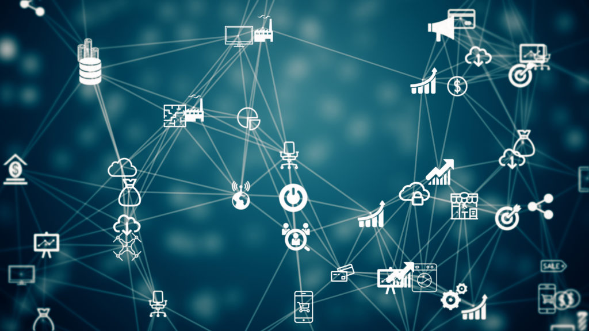

The IoT is beginning to shape the future of many industries, by generating an unprecedented amount of data. Khalil Dimachkie, technical strategist at Big Radical extensively explores this emerging tech trend
The Internet of Things (IoT) essentially refers to an ecosystem of discrete computing devices with sensors connected through the infrastructure of the internet. The concept may have been bubbling away in the industry for a long time, but the democratisation of computing technology through the availability and affordability of small computing devices has now pushed it firmly into the mainstream. So how did we get to this point? A brief trawl through the IoT’s evolution can be summed up quite simply as things getting smaller – a cycle of minaturisation that began with computers the size of a room and ended up with a smartphone in the palm of hands.
With the advances in miniature computers and their increased affordability and availability, along with miniature sensors, IoT was ripe for consumerisation. The issue standing in the way of mass adoption of IoT as a paradigm outside of industry has been the control aspect. IoT devices represent rudimentary decentralised computing, they are individual self-contained devices that can communicate and receive instruction from other computer devices. The issue is how do you tell them what to do, and how do you make use of the data that sensors are collecting? Traditionally this had always required some kind of central computer to hold a rule set and act as a command and control server. However, as the average consumer does not have the will or know-how to set up a control server in their house. IoT would need to shake of much of this complexity to become a mainstream opportunity.
As smartphones became near ubiquitous, it quickly became obvious that the perfect device to act as this command and control server was the mobile that people always have on them. As a bonus, this device could gather additional context itself using its embedded sensors as well as user location and behaviour. For example, your connected thermostat can know if you are home or not by using the location of your phone. While using the phone as a control device is necessary it did prove lacking as the primary control server.
The traction around smart-home technology has been instrumental in cementing the IoT as a genuine consumer proposition, due to an accessibility and advent of affordable IoT devices. Where it used to take a significant investment in capital and labour to set up a connected smart home, now it is a matter of buying off the shelf IoT devices and connecting them together. Almost any device you use in the home now has a connected smart version from light bulbs and thermostats to tea kettles, fridges, and ovens. Additionally, devices that sense the state of a room are widely available in the form of motion sensors, proximity sensors, thermostats, humidity sensors and more. The smart home market has settled on the hub approach to controlling your IoT devices which helps account for the different people that use the devices. These hub type devices are being used to bridge the different communications protocols used by IoT devices and hold and control the ruleset for the house from a central place in the home.
Ethernet offers a standard way to link the computers via a wired connection to the network. It is an interface connecting multiple devices, like machines and switches. Internet is a digital network linking worldwide computer networks. With the aid of internet users can exchange information instantly. It facilitates the exchange of information and the provision of services such as file sharing, the World Wide Web and e-mail, pcs, routers, switches and other devices link to each other on the internet using cables or a wireless network or more sophisticated technologies such as fiber optics.
| Ethernet | Internet |
|---|---|
| It allows only one communication at a time. | It allows multiple communications taking place concurrently along its different paths. |
| Example of Ethernet is LAN (Local Area Network). | Example of Internet is WAN (Wide Area Network). |
| Ethernet is more secure because outside devices have no access to the network. | Internet is less secure as anyone can access the network and gain the information. |
| Uses broadcast network to implement communications. | Internet is less secure as anyone can access the network and gain the information. |